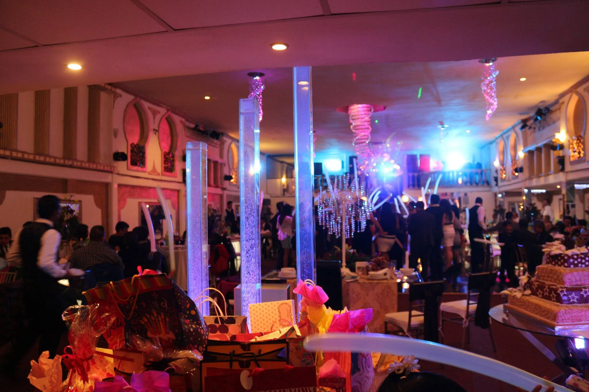

Organizar una boda perfecta requiere de proveedores confiables que garanticen calidad y profesionalismo. Si estás planeando tu boda en el Área Metropolitana, esta guía te ayudará a encontrar a los mejores aliados para que tu día sea inolvidable. Y, por supuesto, Grupo Musical Versátil La Célula se encargará de la parte más emocionante: ¡la música!
1. Salones y espacios para eventos
El lugar define gran parte del ambiente. Busca espacios que se adapten a tu número de invitados y estilo de boda. En el Área Metropolitana, algunos de los mejores son:
- Salón Elegance
- Hacienda Los Pinos
- Jardín de Eventos La Esperanza
2. Wedding planners y coordinación
Un buen wedding planner asegura que todo salga como lo imaginaste. Colaborar con profesionales locales facilitará la logística y reducirá el estrés.
3. Fotografía y video
Los recuerdos se guardan mejor con imágenes de calidad. Busca fotógrafos que cuenten con un estilo que se adapte a ti, ya sea clásico, moderno o artístico.
4. Catering y banquete
La comida es uno de los puntos más comentados por los invitados. Elige un proveedor con degustación previa y menús personalizados.
5. Música: el alma de tu celebración
La música en vivo eleva cualquier boda a otro nivel. Grupo Musical Versátil La Célula ofrece repertorio variado, interacción con los invitados y un show que hará vibrar a todos.
Además de la música instrumental, es importante considerar opciones para momentos clave como la ceremonia religiosa, el vals de los novios y la fiesta. Nuestro equipo cuenta con experiencia tocando desde baladas románticas hasta cumbias y rock en español, adaptándose perfectamente al flujo natural de tu celebración sin interrupciones abruptas.
6. Decoración y ambientación
La decoración transforma el espacio y refleja tu personalidad como pareja. Trabaja con floristas y decoradores que entiendan tu visión, desde arreglos elegantes con rosas y hortensias hasta propuestas más rústicas con elementos naturales. La iluminación adecuada complementará tanto el ambiente como el show musical en vivo.
Conclusión: Crea un equipo ganador para tu boda
El éxito de tu boda en el Área Metropolitana depende de elegir a los proveedores correctos. Con el apoyo de Grupo Musical Versátil La Célula, tu celebración tendrá el mejor ambiente y recuerdos imborrables.
🎶 ¡Haz que tu boda sea inolvidable, agenda con Célula!Preguntas Frecuentes (FAQs)
1. ¿Trabajan con otros proveedores de la ciudad?
Sí, nos adaptamos a cualquier equipo de organización.
2. ¿Pueden tocar en cualquier tipo de espacio?
Sí, contamos con equipo propio que se ajusta a salones, jardines y haciendas.
3. ¿La música se personaliza para cada boda?
Por supuesto, diseñamos un repertorio a medida.
4. ¿Cómo contrato a Grupo Musical Versátil La Célula?
Solo debes contactarnos aquí y asegurar la fecha de tu evento.